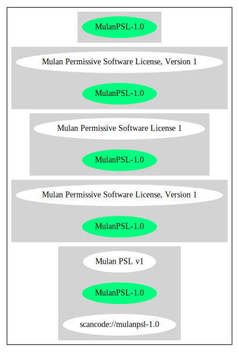

Key |
Value |
|---|---|
Fullname |
Mulan Permissive Software License, Version 1 |
Shortname |
MulanPSL-1.0 |
Rating |
Unknown, probably Attention or Stop or No-Go |
SPDX: http://spdx.org/licenses/MulanPSL-1.0.json
https://license.coscl.org.cn/MulanPSL/
https://github.com/yuwenlong/longphp/blob/25dfb70cc2a466dc4bb55ba30901cbce08d164b5/LICENSE
{
"__impliedNames": [
"MulanPSL-1.0",
"Mulan Permissive Software License, Version 1"
],
"__impliedId": "MulanPSL-1.0",
"facts": {
"SPDX": {
"isSPDXLicenseDeprecated": false,
"spdxFullName": "Mulan Permissive Software License, Version 1",
"spdxDetailsURL": "http://spdx.org/licenses/MulanPSL-1.0.json",
"_sourceURL": "https://spdx.org/licenses/MulanPSL-1.0.html",
"spdxLicIsOSIApproved": false,
"spdxSeeAlso": [
"https://license.coscl.org.cn/MulanPSL/",
"https://github.com/yuwenlong/longphp/blob/25dfb70cc2a466dc4bb55ba30901cbce08d164b5/LICENSE"
],
"_implications": {
"__impliedNames": [
"MulanPSL-1.0",
"Mulan Permissive Software License, Version 1"
],
"__impliedId": "MulanPSL-1.0",
"__isOsiApproved": false,
"__impliedURLs": [
[
"SPDX",
"http://spdx.org/licenses/MulanPSL-1.0.json"
],
[
null,
"https://license.coscl.org.cn/MulanPSL/"
],
[
null,
"https://github.com/yuwenlong/longphp/blob/25dfb70cc2a466dc4bb55ba30901cbce08d164b5/LICENSE"
]
]
},
"spdxLicenseId": "MulanPSL-1.0"
}
},
"__isOsiApproved": false,
"__impliedURLs": [
[
"SPDX",
"http://spdx.org/licenses/MulanPSL-1.0.json"
],
[
null,
"https://license.coscl.org.cn/MulanPSL/"
],
[
null,
"https://github.com/yuwenlong/longphp/blob/25dfb70cc2a466dc4bb55ba30901cbce08d164b5/LICENSE"
]
]
}